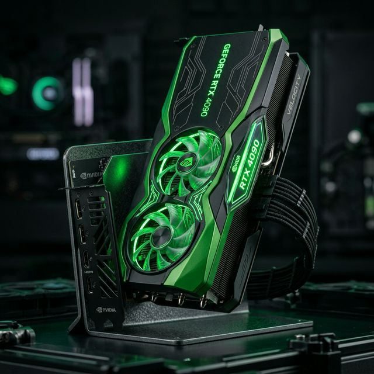

← SEÇİM EKRANINA DÖN

NVIDIA GeForce GTX 1050 Ti (Masaüstü)
NVIDIA GeForce GTX 1050 Ti - Teknik Özellikler
VRAM
4 GB GDDR5
Bellek Arayüzü
128-bit
Çekirdek Hızı
1392 MHz
İşlem Birimleri
768 CUDA
Bağlantı Arayüzü
PCIe 3.0 x16
TDP / Güç
75W
Güncel Fiyatları Gör (Akakçe)